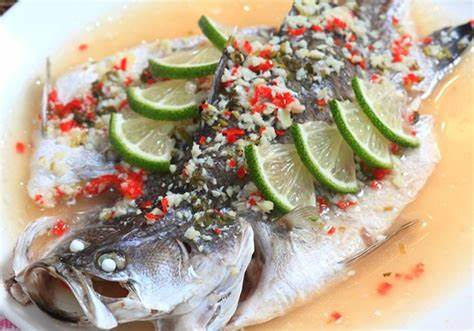
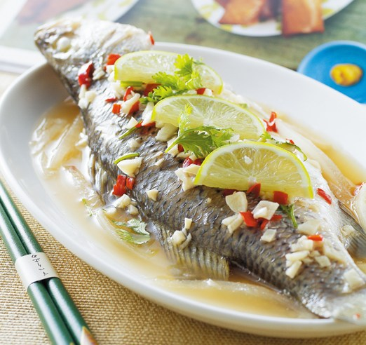
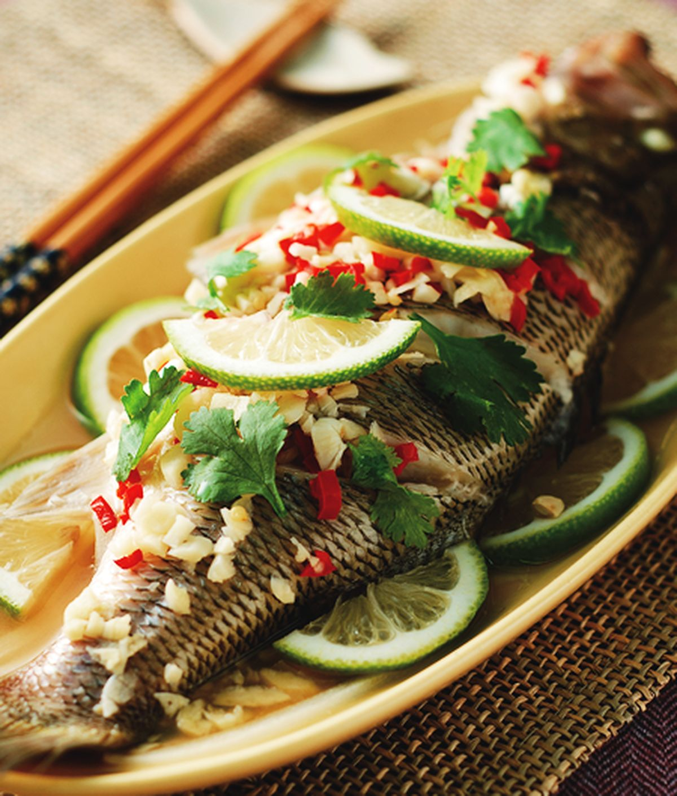

等鍋中的水燒開以後，在魚上方放上薑片很蔥段，並用中大火蒸10分鐘(魚肉熟透)。
再來將辣椒和香菜切末後與蒜末、魚露、糖、水、檸檬汁均勻混合備用。
最後等魚蒸熟後，把薑片、蔥段和湯汁移除，再淋上準備好的醬汁就完成了喔。
  
咖哩飯介紹 打拋豬介紹 絲瓜炒蛤蠣介紹 心得
催眠曲5分钟入睡，治愈重度失眠，灵魂放松轻音乐
Your browser does not support the audio element. Your browser does not support the video tag.